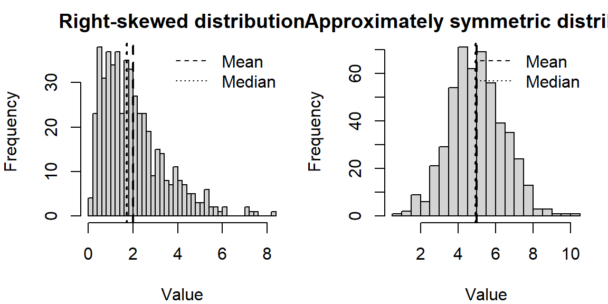
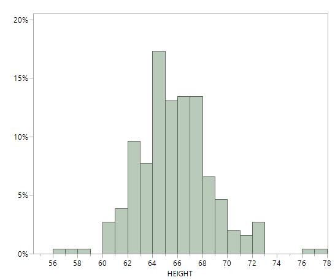
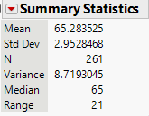
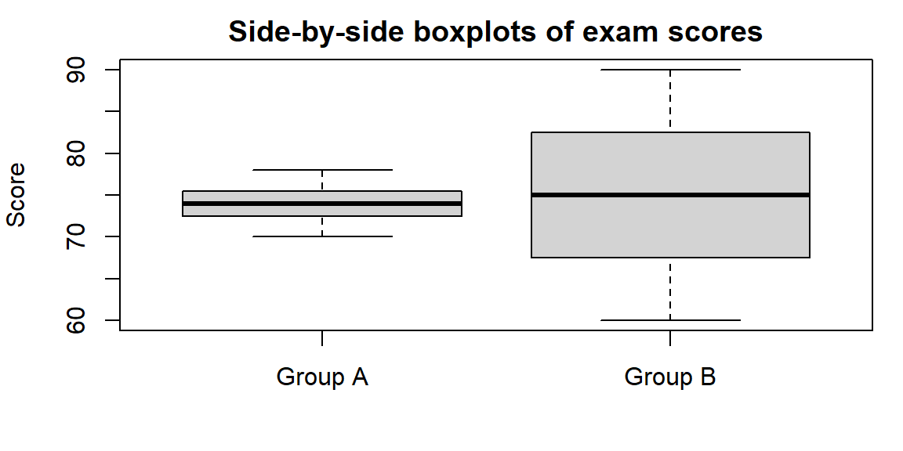

| 93 | 96 | 42 | 155 | 94 |
4 Describing Data with Numbers
4.1 Measures of Center (Mean, Median, Mode)
“You keep using that word. I do not think it means what you think it means.” - Inigo Montoya
Guiding question: What’s the “typical” value in a dataset?
One of the first things we usually want to know about a numeric variable is where it “centers.” When we say “typical,” we’re asking: if we had to pick one number to represent the group, what would it be? In this section we’ll explore three common answers—mean, median, and mode—and think about when each one makes sense.
What do we mean by “typical”?
A good summary of the center should capture the central tendency of the data without being too distracted by the extremes. Depending on how the data are shaped, different summaries will feel more or less representative. Here are the big three:
The mean (arithmetic average)
The
\[ \bar{x} = \frac{1}{n}\sum_{i=1}^n x_i. \]
Because it uses every value, the mean incorporates all information—but it can be sensitive to outliers. A single extreme value can pull the mean far from where most data lie.
Example (Scutari data). Florence Nightingale is well known for her work in promoting hospital conditions for British soldiers in the Crimean War. One set of data she explored involved patient outcomes in the hospitals in Crimea versus those in hospitals in Scutari, Turkey1.
The data file scutari.jmp contains the number of soldiers in each regiment2 who were hospitalized in Crimea and Scutari and the number who died.
Let’s examine only the number of soldiers who died in Scutari for the first five regiments in the dataset. These values are
To find the mean we have \[ \begin{align*} \bar{x} = & \frac{1}{5}(480)\\ = & 96 \end{align*} \]
So we have the “typical” value for this group of data as 96.
Now, suppose we had another value added to this data, 500. We now have the data values
| 93 | 96 | 42 | 155 | 94 | 500 |
The mean is now \[ \begin{align*} \bar{x} = & \frac{1}{6}(980)\\ =& 163.3 \end{align*} \]
Does 163.3 feel “typical” for this group? Not at all—the single outlier drags the mean upward. This is a case where the mean alone can be misleading.
Sometimes we adjust the mean to reduce the influence of extremes. A trimmed mean drops a certain percentage of the smallest and largest values before averaging; this can provide a compromise between mean and median. In a 10% trimmed mean, for example, you remove the lowest 10% and the highest 10% of observations, then compute the mean of what remains.
The median (middle value)
The
Because it depends only on order, the median is resistant to extreme values. In the Scutari example above, ordering the values gives
| 42 | 93 | 94 | 96 | 155 | 500 |
The median (the average of the third and fourth values) is 95—much more representative of the number of deaths the regiments had in Scutari. This robustness is why medians are often reported for skewed data such as incomes or home prices.
The mode (most frequent value)
The
The shape of a distribution
When examining a data distribution of a quantitative variable, whether portrayed by a frequency table or by a graph such as a histogram, we should look for clear peaks. Does the distribution have a single mound? A distribution of such data is called unimodal.
A distribution with two distinct mounds is called bimodal. A bimodal distribution can result, for example, when a population is polarized on a controversial issue. Suppose each subject is presented with ten scenarios in which a person found guilty of murder may be given the death penalty. If we count the number of those scenarios in which subjects feel the death penalty would be just, many responses would be close to 0 (for subjects who oppose the death penalty generally) and many would be close to 10 (for subjects who think it’s always or usually warranted for murder).
A bimodal distribution can also result when the observations come from two different groups. For instance, a histogram of the height of students at a university might show two peaks, one for females and one for males.
What is the shape of the distribution? The shape of the distribution is often described as
A distribution is symmetric if the side of the distribution below a central value is a mirror image of the side above that central value. The distribution is skewed if one side of the distribution stretches out longer than the other side.
To skew means to stretch in one direction. A distribution is skewed to the left if the left tail3 is longer than the right tail. A distribution is skewed to the right if the right tail is longer than the left tail.
Choosing the right measure
How do you decide which summary to use? A few guidelines can help:
- Use the mean when the distribution is roughly symmetric without outliers. The mean connects nicely to many statistical models and formulas.
- Use the median when the distribution is skewed or contains outliers. The median provides a better sense of the typical case when extremes are present.
- Use the mode when describing the most common category or when the data are naturally discrete. For continuous variables, speak of the “modal class” (the bin with the highest frequency).
You can also look at the relationship among mean, median, and mode to diagnose shape. In a symmetric distribution these summaries coincide. In a right‑skewed distribution the mean typically lies to the right of the median, and the mode is the smallest of the three; in a left‑skewed distribution the order reverses.
Illustration: skewness and the mean–median comparison
The following simulates data from a right‑skewed distribution and a symmetric distribution and plots them side by side. Notice how the mean and median behave.

In the right‑skewed distribution, the mean lies to the right of the median, reflecting the pull of larger values. In the nearly symmetric distribution, the mean and median are close together.
Working in JMP Pro 17
JMP makes it easy to compute and compare these summaries.
- Use Analyze→Distribution on a single numeric column. The report shows the Mean and Median under the “Summary Statistics” section, and a “Quantiles” table lists the median explicitly. The bar under the histogram marks the median with a vertical line.
- To find the mode, examine the histogram (bins with the highest bars) or create a Tabulate table. Because continuous measurements rarely tie exactly, the notion of a mode is approximate.
- For a trimmed mean, click the red triangle ▶ next to the variable name in the Distribution platform, choose Nonparametric→TrimmedMean, and select the trimming proportion.
Recap
| Keyword | Definition |
|---|---|
| Mean | The arithmetic average: sum of all observations divided by the number of observations; sensitive to extreme values. |
| Median | The middle value when data are ordered; half the observations are at or below it; resistant to outliers. |
| Mode | The most frequently occurring value (or class) in the data; useful for categorical or discrete variables. |
| Right-skewed | A distribution where the tail extends to the right; typically mean>median>mode. |
| Left-skewed | A distribution where the tail extends to the left; typically mean<median<mode. |
Check your understanding
A sample of commuting times (in minutes) for twelve workers is \[ 10,\ 12,\ 12,\ 15,\ 16,\ 17,\ 18,\ 18,\ 18,\ 20,\ 22,\ 90. \] Use these value for the following:
Find the median commuting time.
Find the mean commuting time. How does the outlier affect the mean?
If you were advising a city planner about what most commuters experience, which summary (mean or median) would you report? Why?
For which of the following situations would the mode be a more informative summary than the mean or median? Explain your reasoning.
The test scores (0–100) from a class of 200 students.
The favorite ice-cream flavors (chocolate, vanilla, strawberry, etc.) of 150 customers.
The heights of 30 professional basketball players.
The median of five numbers is 8 and the mean is 10. If four of the numbers are 3,7,8, and 20, what is the fifth number? (Hint: Use the definitions of median and mean.)
Describe a situation in which the trimmed mean would be preferred over both the mean and the median.
Solutions
a)Ordering the commuting times yields 10,12,12,15,16,17,18,18,18,20,22,90. With 12 observations, the median is the average of the 6th and 7th values: \((17 + 18)/2 = 17.5\) minutes. b)The mean is \((10 + 12 + 12 + 15 + 16 + 17 + 18 + 18 + 18 + 20 + 22 + 90)/12 = 268/12 \approx 22.33\) minutes. The 90‑minute commute pulls the mean upward by about 5minutes compared to the median. c)For summarizing what most commuters experience, report the median (17.5minutes). It better represents the typical commute and is not inflated by the one long commute.
a)Mean or median. Test scores on a bounded 0–100 scale often form a roughly bell‑shaped distribution; either mean or median can represent typical performance. The mode might be less stable because exact scores can vary. b)Mode. Favorite flavors are categorical; reporting the most popular flavor (mode) is more meaningful than attempting to average flavors. c)Mean or median. Heights are quantitative; the mean or median conveys typical height. The mode is less useful because exact duplicates are rare and height is nearly continuous.
With five numbers, the median is the third when ordered. Because the median is 8, the third value (when the numbers are sorted) must be 8. The numbers we know are 3,7,8,20 and an unknown \(x\). After sorting them, the median (middle value) must be 8, so the sorted list must be 3,7,8,\(x\),20 (if \(x \leq 20\)) or 3,7,8,20,\(x\) (if \(x \geq 20\)). To satisfy a mean of 10, the sum of all five numbers is 5×10=50. The known sum is 3+7+8+20=38, so \(x = 12\). Check the ordering: 3,7,8,12,20 has median 8 and mean 10. Thus the fifth number is 12.
Trimmed means are useful when you expect a few extreme observations in both tails but still want to use most of the data. For example, in judging gymnastics or diving, a panel of judges gives scores; to guard against unusually high or low scores (perhaps due to bias), competitions often drop the highest and lowest score and average the rest. A trimmed mean removes these extremes, producing a fairer overall score.
4.2 Measures of Variability (Range, IQR, Standard Deviation)
“In statistics, variation is the name of the game – without it there would be nothing to explain.” – David Salsburg
Guiding question: How do we measure variability?
If the center tells us what’s typical, measures of variability tell us how spread out the data are around that typical value. Two datasets can share the same mean yet be very different if one is tightly clustered and the other is widely scattered. We need tools to describe that spread and to compare it across groups.
Why variability matters
Understanding variability helps us judge reliability. If commute times vary widely from day to day, a typical time doesn’t provide much certainty. In manufacturing, small variability in part dimensions indicates a stable process; large variability suggests something is wrong. In inferential statistics, measures of variability (especially variance and standard deviation) play a central role in quantifying uncertainty.
We’ll look at four common summaries: the range, the interquartile range (IQR), the variance, and the standard deviation. Each captures spread in a slightly different way.
The range
The
\[ \text{Range} = \max(x) - \min(x). \]
The range is easy to compute and understand, but it depends only on two data points—making it very sensitive to outliers. If one observation is extreme, the range may exaggerate typical variability.
Two data sets can have the same range and be vastly different with respect to data variation.
For Example, Consider the data set A: \[1, 3, 5, 6, 8, 9, 10, 15\] and data set B: \[1, 5, 5, 5, 5, 5, 5, 5, 5, 5, 15\]
Both data sets have the same range but are very different in how the data are spread out.
Quartiles and the interquartile range (IQR)
To get a sense of spread that isn’t distorted by extremes, we can look at quantiles. The
\[ \text{IQR} = Q_3 - Q_1. \]
Because it uses the middle half of the data, the IQR is a resistant measure of spread. It tells us how wide the “middle 50%” is, ignoring the tails. The IQR is central to boxplots and to identifying outliers (as we’ll see in the next section).
Variance and standard deviation
For a different measure of variability, we can calculate the distance and direction from the mean for each individual measurement. This is known as the deviation of the measurement. \[ \text{deviation} = x - \bar x \]
Using these deviations, we can construct a more sensitive (as compared to the range) measure of variation.
Example:
Data set 1:
1, 2, 3, 4, 5
Data set 2:
2, 3, 3, 3, 4
Both datasets have a mean of 3.
The deviations for data set 1 are: \[ \begin{align*} (1-3), (2-3), (3-3), (4-3), (5-3) \Longrightarrow -2, -1, 0, 1, 2 \end{align*} \]
The deviations for data set 2 are: \[ \begin{align*} (2-3), (3-3), (3-3), (3-3), (4-3) \Longrightarrow -1, 0, 0, 0, 1 \end{align*} \]
What information do these deviations contain?
If they tend to be large in magnitude, as in data set 1, the data are spread out, or highly variable.
If the deviations are mostly small, as in data set 2, the data are clustered around the mean, \(\bar x\) , and therefore do not exhibit much variability.
The next step is to condense the information in these distances into a single numerical measure of variability.
While not just average these values?
You see from the two example datasets above that some of the values are below the mean making the deviation negative. Other values are above the mean making the deviation positive. The negative deviations cancel out the positive deviations when you sum them up. In fact, the sum of deviations of values from the mean will always be zero.
For those who want to see the math:
\[ \begin{align*} \frac{1}{n}\sum^n_{i=1}(x_i - \bar x) &= {\frac{1}{n}\sum^n_{i=1}x_i - \frac{1}{n}\sum^n_{i=1}\bar x}\\ &{ = \bar x - \frac{1}{n}n\bar x}\\ & {= \bar x - \bar x}\\ &{ = 0} \end{align*} \]
So this won’t work. What we can do instead is square the deviations. By doing this and averaging4 them out, we will obtain what is known as the sample
\[ s^2 = \frac{1}{n-1} \sum_{i=1}^n (x_i - \bar{x})^2 \]
Because the variance uses the square of the units of measurement for the original data, its square root is easier to interpret. This is called the sample
\[ \begin{align*} s =& \sqrt{s^2}\\ =& \sqrt{\frac{1}{n-1} \sum_{i=1}^n (x_i - \bar{x})^2} \end{align*} \]
Squaring the deviations ensures that positive and negative deviations don’t cancel out and gives more weight to larger deviations. Taking the square root returns the measure to the original units of the data. Standard deviation answers the question: on average, how far do observations fall from the mean? Unlike the IQR, the standard deviation is sensitive to outliers, because every deviation is squared. F
Illustration: comparing spreads
Consider two small sets of exam scores. GroupA scores are tightly clustered, and GroupB scores vary widely even though their means are similar.
| GroupA | 70 | 72 | 73 | 74 | 75 | 76 | 78 |
| GroupB | 60 | 65 | 70 | 75 | 80 | 85 | 90 |
We’ll compute the range, IQR, and standard deviation for each group.
| mean | range | IQR | sd | |
|---|---|---|---|---|
| Group_A | 74 | 8 | 3 | 2.65 |
| Group_B | 75 | 30 | 15 | 10.80 |
In this example, both groups have means around the mid‑70s (mean≈74). However, GroupA’s range is 8 points and its IQR is 3 points, while GroupB’s range is 30 points and its IQR is 15 points. The standard deviation for GroupB is more than triple that of GroupA. Even without a graph you can see that GroupB’s scores are much more spread out.
Working in JMP Pro 17
To examine variability in JMP:
- Range and IQR. In the Distribution platform, click the red triangle ▶ next to the variable name and select Save Quantiles or Quantiles to see \(Q_1\), \(Q_2\), \(Q_3\) and compute the IQR (\(Q_3 - Q_1\)). The range is visible from the minimum and maximum shown in the summary.
- Variance and standard deviation. These appear automatically in the “Summary Statistics” section of the Distribution report. Standard deviation is labeled “Std Dev,” and variance is its square.
- Multiple groups. To compare groups, use Analyze→Fit Y by X with a continuous response and a categorical factor. The side‑by‑side boxplots display medians, quartiles, and potential outliers, and the “Means and Std Dev” table summarizes each group’s mean and standard deviation.
Recap
| Keyword | Definition |
|---|---|
| Range | The difference between the maximum and minimum values in a dataset; very sensitive to outliers. |
| Quartile | A value that divides ordered data into four equal parts; \(Q_1\) is the first quartile (25% mark) and \(Q_3\) is the third quartile (75% mark). |
| Interquartile range (IQR) | The difference \(Q_3 - Q_1\); measures the spread of the middle half of the data; resistant to outliers. |
| Variance | The average squared deviation from the mean; units are squared. |
| Standard deviation | The square root of variance; a typical distance from the mean; sensitive to outliers but commonly used in many statistical formulas. |
Check your understanding
For the exam score data above (GroupA and GroupB), interpret the differences in standard deviation. Which group has more variability and why?
A dataset of weekly hours spent exercising (in hours) for eight people is 2, 3, 3, 4, 4, 4, 5, 15.
Compute the range, IQR, and standard deviation.
How does the outlier of 15 hours affect each measure of variability?
If you wanted to describe the spread for most people in this group, which measure would you report? Explain.
Explain in your own words why we square deviations when computing variance. What would go wrong if we didn’t square them?
Two companies have average delivery times of 3 days. Company A has a standard deviation of 0.5 days, while Company B has a standard deviation of 2 days. Describe what this tells you about customer experiences with each company.
Solutions
GroupB has a standard deviation of about 10.808 points, whereas GroupA’s standard deviation is about 2.65 points (as computed in the example). The larger standard deviation means GroupB’s scores are more spread out around the mean—students in GroupB vary widely in performance compared to the tight clustering of GroupA.
a)The ordered data are 2,3,3,4,4,4,5,15. The range is 15−2=13. \(Q_1\) is halfway between the 2nd and 3rd observations (3 and 3), so \(Q_1 = 3\); \(Q_3\) is halfway between the 6th and 7th observations (4 and 5), so \(Q_3 = 4.5\). The IQR is 4.5−3=1.5 hours. The mean is \((2+3+3+4+4+4+5+15)/8 = 40/8 = 5\) hours. The standard deviation (using \(n-1=7\) in the denominator) is about 4.14 hours. b) The outlier of 15 hours has a huge impact on the range (it becomes 13) and the standard deviation (4.14), both of which rise substantially. The IQR remains 1.5 because quartiles ignore the extreme values—so the IQR is more robust. c) To describe the spread for most people, the IQR is most appropriate because it captures the middle 50% of values and is not distorted by the one extreme exerciser.
If we summed deviations from the mean without squaring them, positive and negative deviations would cancel out, giving zero. Squaring each deviation ensures that all contributions to variability are positive and that larger deviations are weighted more heavily, which reflects their greater contribution to the overall spread.
Although the average delivery time is the same for both companies, Company A’s small standard deviation means most deliveries take close to 3 days—customers can expect consistent service. Company B’s larger standard deviation indicates delivery times vary widely; some packages may arrive much sooner or much later than 3 days. Customers may perceive Company A as more reliable.
4.3 Identifying Outliers
“Would I rather be feared or loved? Easy, both. I want people to be afraid of how much they love me.” – Michael Scott
Guiding question: How do we detect and handle outliers?
Outliers are observations that lie far away from the rest of the data. They can arise from data entry mistakes, instrument malfunctions, rare but real variation, or genuinely interesting cases. Outliers deserve attention: sometimes they reveal important phenomena; other times they signal problems. Our goal is to detect outliers systematically and decide how to treat them thoughtfully.
What counts as an outlier?
Two common approaches to flag potential outliers are the IQR rule and the z‑score rule.
The 1.5×IQR rule
For a dataset with quartiles \(Q_1\) and \(Q_3\), the interquartile range is \(\text{IQR} = Q_3 - Q_1\). Points are considered potential outliers if they fall beyond \(1.5\times \text{IQR}\) from the quartiles. These boundaries are sometimes referred to as the
- Lower fence: \(Q_1 - 1.5 \times \text{IQR}\)
- Upper fence: \(Q_3 + 1.5 \times \text{IQR}\)
Any observation below the lower fence or above the upper fence is flagged as a potential outlier. Because the IQR ignores the tails of the distribution, this rule is resistant—it’s less affected by the very points it’s trying to find.
The z‑score rule
We can standardize each value of a dataset using the sample mean \(\bar{x}\) and standard deviation \(s\) to compute a
\[ z = \frac{x_i - \bar{x}}{s} \]
For many approximately bell-shaped distributions,
about 68% of the observations fall within 1 standard deviation of the mean, that is, between \(\bar x -s\) and \(\bar x +s\) (denoted \(\bar x \pm s\))
about 95% of the observations fall within 2 standard deviations of the mean \((\bar x \pm 2s)\)
All or nearly all (about 99.7%) observations fall within 3 standard deviations of the mean \((\bar x \pm 3s)\)
These results are known as the
Example: Female heights
Many human physical characteristics have bell-shaped distributions. Let’s explore height. The file heights.jmp contains heights of of 261 female students at the University of Georgia. Below is a histogram and summary statistics for these heights. Note that a height of 92 inches was not included below.

The histogram has approximately a bell shape. From the summary statistics, the mean and median are close, about 65 inches, which reflects an approximately symmetric distribution. The empirical rule is applicable. - About 68% of the observations fall between \[ \begin{align*} \bar x \pm s &= 65.3 \pm 3.0\\ & = {(62.3, 68.3)} \end{align*} \]
About 95% of the observations fall between \[ \begin{align*} \bar x \pm 2s &= 65.3 \pm 2(3.0)\\ & = {(59.3, 71.3)} \end{align*} \]
About 99.7% of the observations fall between \[ \begin{align*} \bar x \pm 3s &= 65.3 \pm 3(3.0)\\ & = {(56.3, 74.3)} \end{align*} \]
We can examine the dataset and count how many observations fall in these intervals:
- 187 observations,
72% , fall within (62.3, 68.3). - 248 observations,
95% , fall within (59.3, 71.3). - 258 observations,
99% , fall within (56.3, 74.3).
In summary, the percentages predicted by the empirical rule are near the actual ones.
Using the Empirical Rule to find outliers
Based on the Empirical Rule, an observation with \(|z| > 3\) might be considered an outlier. However, this method is not resistant—outliers inflate \(s\), which can mask their own detection—and it should be used only when the distribution is close to bell-shaped.
What to do with outliers
Identifying an outlier is not the same as discarding it. Consider these steps:
- Investigate. Check the raw data entry, measurement units, and collection context. Could the value be a typo or a mis-recorded unit? Is there an instrument calibration issue?
- Understand context. Sometimes extreme values are genuine and carry important information (e.g., rare species sightings, extreme weather events). Domain knowledge helps decide whether to keep them.
- Report and compare. It’s often useful to perform analyses both with and without the outlier to see how much it influences results. If conclusions change dramatically, acknowledge this in reporting.
- Use robust methods. When outliers are present and valid, robust statistics like the median, IQR, trimmed mean, or non‑parametric tests help mitigate their influence.
Illustration: detecting outliers with both rules
Consider a small dataset of reaction times (in milliseconds): 240, 250, 255, 260, 265, 270, 275, 280, 450. One value appears much larger than the others. We’ll compute the IQR fences, z‑scores, and use a boxplot to visualize.
| Value | z_score | Outlier_IQR | Outlier_z_score |
|---|---|---|---|
| 240 | -0.67 | FALSE | FALSE |
| 250 | -0.51 | FALSE | FALSE |
| 255 | -0.43 | FALSE | FALSE |
| 260 | -0.36 | FALSE | FALSE |
| 265 | -0.28 | FALSE | FALSE |
| 270 | -0.20 | FALSE | FALSE |
| 275 | -0.12 | FALSE | FALSE |
| 280 | -0.04 | FALSE | FALSE |
| 450 | 2.62 | TRUE | FALSE |
In this example, the quartiles are \(Q_1\)≈255 and \(Q_3\)≈275, so \(\text{IQR} =\) 20. The fences are 225 and 305. The value 450 is above the upper fence and is flagged as an outlier by the IQR rule. Its z‑score is about 2.62, which does not exceed 3, thus it is not marked an outlier by the z‑score rule. Because the sample is small and clearly skewed by the outlier, the IQR rule is the more reliable of the two.
Working in JMP Pro 17
- Boxplots and outliers. Use Graph→GraphBuilder to create a boxplot. JMP plots points beyond 1.5×IQR as small circles by default. Hover over a point to see its value; right‑click to exclude or include it.
- Distribution platform. In Analyze→Distribution, the boxplot includes the fences and outlier points. You can click the red triangle ▶ and choose Nonparametric→Outlier Box Plot for additional options.
- Exploring z‑scores. To compute z‑scores in JMP, create a new column and use Formula→Standardize. Then filter rows with |z|>3 to flag potential outliers.
Recap
| Keyword | Definition |
|---|---|
| IQR rule | Points more than 1.5×IQR below \(Q_1\) or above \(Q_3\) are flagged as potential outliers |
| Lower/Upper fence | Thresholds used in the IQR rule: \(Q_1 - 1.5 \times \text{IQR}\) |
| z‑score | Standardized value \(z = (x - \bar{x})/s\); indicates how many standard deviations a point is from the mean. |
| Empirical Rule | In a normal distribution, about 68% of values lie within 1 standard deviation of the mean, 95% within 2 standard deviations, and 99.7% within 3 standard deviations. |
Check your understanding
For the dataset \(3, 4, 5, 6, 7, 8, 9, 100\):
Compute the quartiles, IQR, and the 1.5×IQR fences.
Identify any outliers using the IQR rule.
Compute z‑scores for each observation. Which values, if any, have |z|>3?
Using GroupB’s exam scores from earlier (60, 65, 70, 75, 80, 85, 90), apply the IQR rule to determine whether any scores are outliers. Explain why or why not.
Suppose heights of adult men follow a normal distribution with mean 70 inches and standard deviation 3 inches. Using z‑scores, what heights would be considered extreme outliers (|z|>3)?
Describe two different actions you might take after flagging an outlier in a dataset. When would each be appropriate?
Explain why the z‑score rule may fail to detect outliers in skewed distributions.
Solutions
a)Ordering the data gives 3, 4, 5, 6, 7, 8, 9, 100. There are 8 values, so the median is the average of the 4th and 5th values: \((6 + 7)/2 = 6.5\). The lower half (3,4,5,6) has median \((4 + 5)/2 = 4.5\), so \(Q_1 = 4.5\). The upper half (7,8,9,100) has median \((8 + 9)/2 = 8.5\), so \(Q_3 = 8.5\). The IQR is 8.5−4.5=4. The fences are \(Q_1 - 1.5\times\text{IQR} = 4.5 - 6 = -1.5\) and \(Q_3 + 1.5\times\text{IQR} = 8.5 + 6 = 14.5\). b) Values below −1.5 or above 14.5 would be considered outliers. In this dataset, 100 > 14.5, so 100 is an outlier. No value is below −1.5, so there are no lower outliers. c) The mean is \((3+4+5+6+7+8+9+100)/8 = 142/8 = 17.75\) and the standard deviation is about 31.63. The z‑score for 100 is \((100 - 17.75)/31.63 \approx 2.59\). Because |2.59| is less than 3, the z‑score rule does not flag 100 as an outlier. This illustrates how outliers inflate the standard deviation and hide themselves.
GroupB’s scores (60, 65, 70, 75, 80, 85, 90) have \(Q_1 = 67.5\) and \(Q_3 = 82.5\) (see the previous section’s example). The IQR is 15. The fences are 67.5−22.5=45 and 82.5+22.5=105. All scores lie between 45 and 105, so there are no outliers under the IQR rule.
Heights more than 3 standard deviations from the mean are below 70−9=61inches or above 70+9=79inches. Thus, heights less than 61inches or greater than 79inches would be considered extreme outliers by the z‑score rule.
Possible actions include: (1) Correcting or removing the outlier if it is due to a data entry or measurement error. This is appropriate when you have verified the value is incorrect. (2) Reporting results with and without the outlier and using robust methods. This is appropriate when the outlier is genuine but influential; you can present both analyses or use methods less sensitive to extreme values.
In skewed distributions, the standard deviation can be inflated by the skew, so the threshold of 3 standard deviations may be too high. Outliers can inflate \(s\) and thus produce smaller z‑scores than expected. The z‑score rule also assumes symmetry; in a skewed distribution the tail on one side is longer, so using a symmetric cutoff like |z| > 3 may miss unusual observations in the longer tail.
4.4 The Five‑Number Summary and Boxplots
“If it’s green or wriggles, it’s biology. If it stinks, it’s chemistry. If it doesn’t work, it’s physics or engineering. If it’s green and wiggles and stinks and still doesn’t work, it’s psychology. If it’s incomprehensible, it’s mathematics. If it puts you to sleep, it’s statistics.” - Anonymous (in Journal of the South African Institute of Mining and Metallurgy (1978))
Guiding question: How can we use the five‑number summary and boxplots?
The
- the minimum,
- the first quartile (\(Q_1\)),
- the median (\(Q_2\)),
- the third quartile (\(Q_3\)), and
- the maximum.
These five numbers give you a sense of where the data begin, where most of them lie, and how far they stretch. A
The five numbers
There are slightly different conventions for how to find the median, \(Q_1\), and \(Q_3\), especially when working with even number of observations.However, most software (including JMP) uses consistent algorithms. The main idea is that about 25% of observations fall below \(Q_1\), about 50% fall below the median, and about 75% fall below \(Q_3\). We will let JMP determine these values for use instead of determining them by hand.
The boxplot: a visual summary
A boxplot displays the five‑number summary in a simple diagram:
- The box spans from \(Q_1\) to \(Q_3\); its length is the interquartile range (IQR). A line inside the box marks the median.
- Whiskers extend from the box to the smallest and largest data points that are not considered outliers. One common convention draws whiskers out to the last observation that is within 1.5×IQR below \(Q_1\) or above \(Q_3\). Points beyond these whiskers are plotted individually (usually as points) as potential outliers.
Because a boxplot is based on quartiles, it is a resistant summary: the box and median are not unduly affected by a handful of extremes. At a glance you can see the central 50% of the data (the box), the typical range (the whiskers), whether the distribution is symmetric or skewed (by looking at the position of the median and the lengths of the whiskers), and whether there are any unusual points.
Boxplots shine when comparing distributions across several groups; you can line up multiple boxes in one plot and quickly judge differences in center, spread, and skewness.
Illustration: boxplots for two groups
Let’s revisit the exam score groups from the previous section. We’ll compute their five‑number summaries and draw side‑by‑side boxplots.
| Statistic | Group_A | Group_B |
|---|---|---|
| Min | 70.0 | 60.0 |
| Q1 | 72.5 | 67.5 |
| Median | 74.0 | 75.0 |
| Q3 | 75.5 | 82.5 |
| Max | 78.0 | 90.0 |

From the table you can see that Group A’s scores run from 70 to 78 with a median of 74, while Group B’s scores run from 60 to 90 with a median of 75. The much longer whiskers and broader box of Group B reveal its greater variability.
Outlier identification
A data point is often flagged as a potential outlier if it falls more than 1.5×IQR below \(Q_1\) or above \(Q_3\). These points warrant a closer look: they could be genuine but rare observations or mistakes in data entry or measurement.
Working in JMP Pro 17
You can build boxplots quickly in JMP:
- Open Graph→Graph Builder and drag your variable to the Y axis. Drag a grouping variable (if any) to the X axis. From the gallery of plots, select the boxplot icon (a box with whiskers) to overlay a boxplot on the graph. JMP uses the 1.5×IQR rule to draw whiskers and will display outliers as separate points.
- The five‑number summary is visible in the Analyze→Distribution output. Click the red triangle ▶ next to the variable and choose Nonparametric→Quantiles to list the quartiles. JMP labels the minimum and maximum directly in the summary.
- Right‑click on the boxplot to toggle “Show Outliers” or adjust the whisker definition if needed.
Recap
| Keyword | Definition |
|---|---|
| Five‑number summary | The five values \(\min, Q_1, Q_2, Q_3, \max\) summarizing the distribution’s location and spread. |
| Boxplot | A graphical display of the five‑number summary: a box from \(Q_1\) to \(Q_3\) with a line at the median, and whiskers extending to the min/max (or to 1.5×IQR). |
| Whisker | The line segment extending from the box to the smallest or largest non‑outlier value. |
Check your understanding
Consider the dataset \(5, 7, 8, 10, 12, 15, 18, 20, 25\).
Compute the five‑number summary (min, \(Q_1\), median, \(Q_3\), max).
Construct the corresponding boxplot. Describe its shape. Is the distribution symmetric or skewed?
A boxplot shows \(Q_1 = 60\), \(Q_2 = 75\), \(Q_3 = 90\) with minimum 50 and maximum 120. The right whisker is much longer than the left whisker, and there are several points plotted individually above 105.
What does the long right whisker indicate about the distribution’s skewness?
Using the 1.5×IQR rule, which observations (approximately) would be considered outliers?
For the dataset \(40, 42, 44, 45, 48, 50, 51, 52, 90\):
Compute the five‑number summary.
Calculate the IQR and determine the lower and upper fences for outliers (using 1.5×IQR).
Identify any outliers and explain how they would appear on a boxplot.
Explain why boxplots are particularly useful for comparing multiple groups on the same scale. What aspects of the distributions can you quickly compare?
Describe at least one limitation of boxplots. When might they hide important features of the data?
Solutions
a)Ordering the data gives 5,7,8,10,12,15,18,20,25. The minimum is 5 and the maximum is 25. The median (the fifth value) is 12. The lower half (5,7,8,10) has median \((7 + 8)/2 = 7.5\), so \(Q_1 = 7.5\). The upper half (15,18,20,25) has median \((18 + 20)/2 = 19\), so \(Q_3 = 19\). The five‑number summary is (5, 7.5, 12, 19, 25). b) The box would span from 7.5 to 19 with a line at 12. The whiskers would extend to 5 and 25. The distribution is slightly right‑skewed because the upper whisker (19→25) is longer than the lower whisker (7.5→5).
a)A long right whisker suggests a right‑skewed distribution—there are some relatively high values pulling the upper tail outward. b) The IQR is \(Q_3 - Q_1 = 90 - 60 = 30\). The upper fence is \(Q_3 + 1.5\times\text{IQR} = 90 + 45 = 135\). Any observation above 135 would be considered an outlier. Since the maximum is 120 (below 135), the individual points above 105 are unusual but do not meet the 1.5×IQR rule; they are “mild” outliers by some conventions. If the maximum were above 135, those values would be flagged as outliers.
a)The ordered data are 40,42,44,45,48,50,51,52,90. The minimum is 40 and the maximum is 90. The median (the fifth value) is 48. The lower half (40,42,44,45) has median \((42 + 44)/2 = 43\), so \(Q_1 = 43\). The upper half (50,51,52,90) has median \((51 + 52)/2 = 51.5\), so \(Q_3 = 51.5\). The five‑number summary is (40, 43, 48, 51.5, 90). b) The IQR is 51.5−43=8.5. The lower fence is \(Q_1 - 1.5 \times \text{IQR} = 43 - 12.75 = 30.25\). The upper fence is \(Q_3 + 1.5 \times \text{IQR} = 51.5 + 12.75 = 64.25\). c) Any observation below 30.25 or above 64.25 would be flagged as an outlier. In this dataset, only 90 exceeds 64.25, so 90 is an outlier. On a boxplot, the upper whisker would extend to 52 (the largest non‑outlier), and the value 90 would appear as a separate point above the whisker.
Boxplots align multiple groups on the same axis, allowing you to compare medians, the spread of the middle half (box length), the overall range (whisker length), and skewness (relative whisker lengths) at a glance. This makes it easy to see which group has a higher central tendency, more variability, or more extreme values.
Boxplots summarize distributions succinctly but omit details like multimodality or the exact shape of the tails. Two very different distributions can share the same five‑number summary. When the sample size is small or when you need to see the full distribution (e.g., to spot bimodality), a histogram or dotplot may be more informative.
4.5 Choosing Appropriate Summary Statistics
“It is not known how many office robberies occur every second because there is no Wikipedia entry for office robbery statistics.” -Michael Scott
Guiding question: Which summary statistics fit different data types?
Not all variables are created equal, and not all summaries make sense for every variable. The right summary statistic depends on both the type of variable (categorical, ordinal, or quantitative) and the shape of its distribution (symmetric, skewed, or subject to outliers). In this section we review guidelines for matching variables to appropriate measures of center and spread.
Categorical and binary data
For categorical variables (nominal or qualitative), arithmetic operations have no meaning. The appropriate summaries are counts, proportions, and the mode (most common category). For example, summarizing people’s favorite ice‑cream flavors would involve tallying how many chose chocolate, vanilla, strawberry, and so on. Reporting the “mean flavor” makes no sense.
A binary variable is a categorical variable with exactly two categories (e.g., pass/fail, disease/no disease). We often code the categories as 1 and 0. In that case, the proportion of 1’s is simply the mean of the coded variable. For example, if 30 out of 100 students pass an exam, the pass rate is 0.30; the mean of the 0/1 indicator is also 0.30.
Ordinal data
Ordinal variables have ordered categories (e.g., Likert ratings such as “Strongly disagree,” “Disagree,” “Neutral,” “Agree,” “Strongly agree”). Differences between levels are not necessarily equal, so computing a mean can be misleading—does “Agree” minus “Neutral” equal “Neutral” minus “Disagree”? A safer approach is to report mode, perhaps along with distribution of responses (a bar chart or counts).
Quantitative data: symmetric vs. skewed
For quantitative variables, we choose summaries based on the shape of the distribution and the presence of outliers:
- Symmetric, no outliers. When the distribution is approximately symmetric and free of extreme values, the mean and standard deviation (or variance) are informative. They convey the central value and typical deviation. Example: exam scores on a test where most students scored near the middle.
- Skewed or with outliers. When the distribution is skewed or contains outliers, the median and IQR are better descriptors of the typical value and spread. The trimmed mean (e.g., a 10% trimmed mean) can also be used to down weight extremes while still reflecting most of the data. Example: household incomes, which often have a long right tail; the mean income is much larger than the median, whereas the median better represents what most households earn.
Quantitative counts (discrete variables) can be summarized with means or medians, but because counts often have skewed distributions (e.g., number of doctor visits), it’s wise to check shape and consider medians.
Illustration: incomes vs. test scores vs. Likert responses
The following compares summary statistics for three small datasets: incomes (right‑skewed), test scores (symmetric), and Likert ratings (ordinal on a 1–5 scale). We compute the mean, median, IQR, standard deviation, and mode where appropriate.
Here are the values:
| Incomes | 25 | 28 | 30 | 32 | 35 | 40 | 45 | 50 | 120 |
| Test_scores | 70 | 72 | 73 | 75 | 76 | 77 | 78 | 80 | 82 |
| Likert_ratings | Strongly disagree | Disagree | Disagree | Neutral | Neutral | Neutral | Agree | Agree | Strongly agree |
| Dataset | Mean | Median | IQR | SD | Mode |
|---|---|---|---|---|---|
| Incomes | 45.00 | 35 | 15 | 29.28 | 25 |
| Test Scores | 75.89 | 76 | 5 | 3.86 | 70 |
| Likert Ratings | NA | NA | NA | NA | Neutral |
Interpretation:
- Incomes. The mean income ($45k) is much higher than the median ($35k) because of the 120k outlier. The IQR (15k) shows that the middle half of incomes lies between $30k and $45k. For skewed data like this, report the median and IQR rather than the mean and standard deviation.
- Test scores. The mean (75.89) and median (76) are similar, and the distribution is narrow (SD = 4.03). Here, the mean and standard deviation are appropriate summaries.
- Likert ratings. The mode is 3. Reporting the distribution of responses conveys the typical sentiment without implying equal spacing.
Working in JMP Pro 17
JMP encourages choosing appropriate summaries by making you specify each column’s modeling type (Continuous, Nominal, Ordinal):
- Nominal variables are summarized with counts and proportions. The Distribution platform shows frequency tables and bar charts; the mode is evident from the highest bar. Means are not computed.
- Ordinal variables can display medians and quartiles. In the Distribution platform, the Quantiles option lists \(Q_1\), median, and \(Q_3\). A Box Plot shows the spread without relying on means.
- Continuous variables get means and standard deviations by default. If the distribution is skewed, use the red triangle ▶ Transform options (e.g., Log) or the Nonparametric menu to request median and IQR. You can also save robust statistics using Save Summaries.
In JMP’s Graph Builder, dragging a categorical variable to the X axis and a continuous variable to Y will create boxplots by default, highlighting medians and quartiles rather than means.
Check your understanding
A health‑care researcher records the number of emergency room visits last year for 50 individuals. The data are right‑skewed, with most people having 0–2 visits and a few having 5 or more. Which measure of center and spread would you report? Explain why.
A survey asks respondents to rate their satisfaction on a 1–5 Likert scale (1 = Very dissatisfied, 5 = Very satisfied). For 300 respondents, the sample mean is 3.9, the median is 4, and the mode is 4. Which statistic(s) would you use to describe typical satisfaction? Why might the mean be misleading?
For a dataset of annual household incomes in a city, the mean is $65,000, the median is $45,000, the standard deviation is $40,000, and the IQR is $20,000.
What does the large gap between the mean and the median tell you about the distribution?
Which measure(s) of center and spread would you report? Justify your choice.
A manufacturer tracks the number of defective items per batch (a count variable). The mean number of defects per batch is 2.3 and the median is 1. What does this tell you about the distribution? Which summary statistic is more informative here?
Explain why it doesn’t make sense to compute a mean for ZIP codes or product serial numbers. How would you summarize such data instead?
Solutions
Counts of emergency room visits are discrete and skewed to the right. The median number of visits and the IQR are appropriate measures. The mean would be pulled upward by a few high counts and would not represent the typical person.
For Likert responses, the mode (4) best describe typical satisfaction. A mean of 3.9 suggests “almost 4,” but interpreting fractional satisfaction levels can be misleading because the scale’s steps are not necessarily evenly spaced. Reporting the distribution of responses (e.g., “60% rated 4 or 5”) provides context.
a)The mean ($65k) is much higher than the median ($45k), indicating a right‑skewed distribution with some very high incomes. The large standard deviation ($40k) and moderate IQR ($20k) reinforce that incomes vary widely, especially in the upper tail. b) Report the median and IQR as primary summaries because they better reflect the typical household and are less affected by very high incomes. You could also mention the mean and SD to provide a sense of the overall level and variability, but note their sensitivity to outliers.
A mean of 2.3 and a median of 1 suggest that most batches have 1 or 2 defects, but some batches have many more, creating a right‑skewed distribution. The median is more informative because it reflects what happens in a typical batch. The mean is inflated by the few batches with many defects.
ZIP codes and serial numbers are identifiers, not quantities. Arithmetic on them (like averaging) has no meaning. They should be summarized by counts or modes if you need to know which codes occur most often. Other summaries (like proportions of orders by ZIP code) can answer meaningful questions.
Small, H. (2020). Nightingale’s overlooked Scutari statistics. Significance, 17(6), 28-33.↩︎
Some regiments have been combined.↩︎
The tails of a distribution are the parts that are for the lowest values and the highest values.↩︎
Why do we divide by \(n-1\) in the variance and standard deviation instead of \(n\)? We said that the variance was an average of the \(n\) squared deviations, so should we not divide by \(n\)? Basically it is because the deviations have only \(n - 1\) pieces of information about variability: That is, \(n - 1\) of the deviations determine the last one, because the deviations sum to 0. For example, suppose we haven \(n= 2\) observations and the first observation has deviation \((x - \bar x) = 5\). Then the second observation must have deviation \((x - \bar x) = -5\) because the deviations must add to 0. With \(n = 2\), there’s only \(n - 1 = 1\) nonredundant piece of information about variability. And with \(n = 1\), the standard deviation is undefined because with only one observation, it’s impossible to get a sense of how much the data vary.↩︎